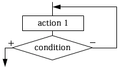
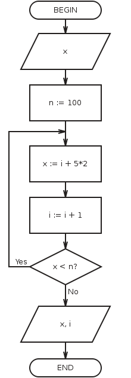

Loop is control structure, that organizes multiple execution of the action.
UNTIL loop:

Execution of loop begins with the action. So, loop body will be executed at least once. After this there is check of condition. So, people called UNTIL loop as loop with post-condition. If condition is false, then there is return to executing actions. If condition is true, then there is exit from loop. So, condition for UNTIL loop is the exit condition from loop. If you don’t want to hang your program, then you must write actions, which will change conditions from false into true.
Hang is the endless repetition of executing actions.
An example of loop with post-condition (picture from the program):
